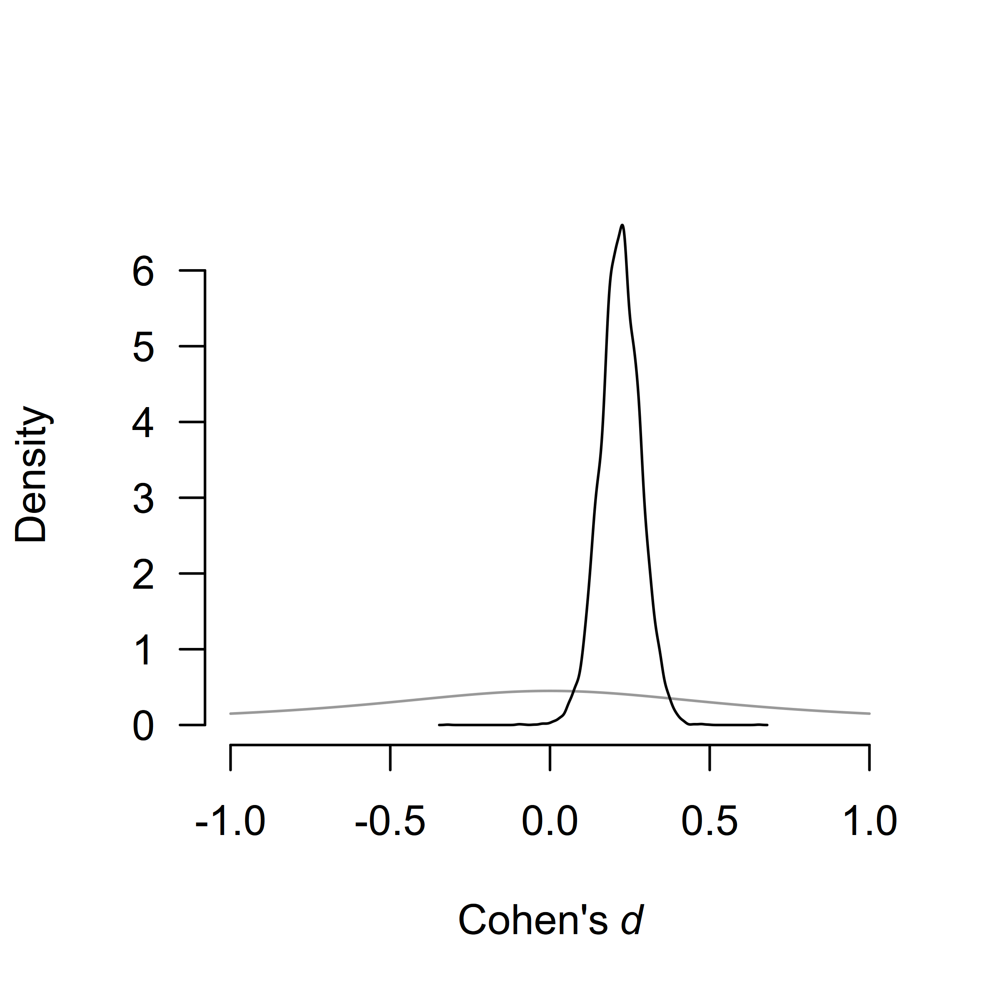

By default, the package estimates an ensemble of 36 meta-analytic models and provides functions for convenient manipulation with the fitted object. However, it has been built in a way that it can be used as a framework for estimating any combination of meta-analytic models (or a single model). Here, we illustrate how to build a custom ensemble of meta-analytic models - specifically the same ensemble that is used in ‘classical’ Bayesian Model-Averaged Meta-Analysis (Gronau et al., 2017, p. @gronau2020primer). See this vignette if you are interested in building more customized ensembles or Bartoš et al. (2020) for a tutorial on fitting (custom) models in JASP.
We illustrate how to fit a classical BMA (not adjusting for publication bias) using RoBMA. For this purpose, we reproduce a meta-analysis of registered reports on Power posing by Gronau et al. (2017). We focus only on the analysis using all reported results using a Cauchy prior distribution with scale \(1/\sqrt{2}\) for the effect size estimation (half-Cauchy for testing) and inverse-gamma distribution with scale = 1 and shape 0.15 for the heterogeneity parameter. You can find the figure from the original publication here and the paper’s supplementary materials at https://osf.io/fxg32/.
First, we load the power posing data provided within the metaBMA package and reproduce the analysis performed by Gronau et al. (2017).
data("power_pose", package = "metaBMA")
power_pose[,c("study", "effectSize", "SE")]
#> study effectSize SE
#> 1 Bailey et al. 0.2507640 0.2071399
#> 2 Ronay et al. 0.2275180 0.1931046
#> 3 Klaschinski et al. 0.3186069 0.1423228
#> 4 Bombari et al. 0.2832082 0.1421356
#> 5 Latu et al. 0.1463949 0.1416107
#> 6 Keller et al. 0.1509773 0.1221166
fit_BMA_test <- metaBMA::meta_bma(y = power_pose$effectSize, SE = power_pose$SE,
d = metaBMA::prior(family = "halfcauchy", param = 1/sqrt(2)),
tau = metaBMA::prior(family = "invgamma", param = c(1, .15)))
fit_BMA_est <- metaBMA::meta_bma(y = power_pose$effectSize, SE = power_pose$SE,
d = metaBMA::prior(family = "cauchy", param = c(0, 1/sqrt(2))),
tau = metaBMA::prior(family = "invgamma", param = c(1, .15)))
fit_BMA_test$inclusion
#> ### Inclusion Bayes factor ###
#> Model Prior Posterior included
#> 1 fixed_H0 0.25 0.00868
#> 2 fixed_H1 0.25 0.77745 x
#> 3 random_H0 0.25 0.02061
#> 4 random_H1 0.25 0.19325 x
#>
#> Inclusion posterior probability: 0.971
#> Inclusion Bayes factor: 33.136
round(fit_BMA_est$estimates,2)
#> mean sd 2.5% 50% 97.5% hpd95_lower hpd95_upper n_eff Rhat
#> averaged 0.22 0.06 0.09 0.22 0.34 0.09 0.34 NA NA
#> fixed 0.22 0.06 0.10 0.22 0.34 0.10 0.34 3026.5 1
#> random 0.22 0.08 0.07 0.22 0.37 0.07 0.37 6600.4 1From the output, we can see that the inclusion Bayes factor for the effect size was \(BF_{10} = 33.14\) and the effect size estimate 0.22, 95% HDI [0.09, 0.34] which matches the reported results. Please note that the metaBMA package model-averages only across the \(H_{1}\) models, whereas the RoBMA package model-averages across all models.
Now we reproduce the analysis with RoBMA. We set the corresponding prior distributions for effect sizes (\(\mu\)) and heterogeneity (\(\tau\)), and remove the alternative prior distributions for the publication bias by setting priors_bias = NULL. To specify the half-Cauchy prior distribution with the RoBMA::prior() function we use a regular Cauchy distribution and truncate it at zero (note that both metaBMA and RoBMA export their own prior() functions that will clash when loading both packages simultaneously). The inverse-gamma prior distribution for the heterogeneity parameter is the default option (we specify it for completeness) and we omit the specifications for the null prior distributions for the effect size, heterogeneity (both of which are set to a spike at 0 by default), and publication bias (which is set to no publication bias by default).
Since metaBMA model-averages the effect size estimates only across the models assuming presence of the effect, we remove the models assuming absence of the effect from the estimation ensemble with priors_effect_null = NULL. Finally, we set transformation = "cohens_d" to estimate the models on Cohen’s d scale (RoBMA uses Fisher’s z scale by default and transforms the estimated coefficients back to the scale that us used for specifying the prior distributions), we speed the computation by setting parallel = TRUE, and set a seed for reproducibility.
library(RoBMA)
fit_RoBMA_test <- RoBMA(d = power_pose$effectSize, se = power_pose$SE, study_names = power_pose$study,
priors_effect = prior(
distribution = "cauchy",
parameters = list(location = 0, scale = 1/sqrt(2)),
truncation = list(0, Inf)),
priors_heterogeneity = prior(
distribution = "invgamma",
parameters = list(shape = 1, scale = 0.15)),
priors_bias = NULL,
transformation = "cohens_d", seed = 1, parallel = TRUE)
fit_RoBMA_est <- RoBMA(d = power_pose$effectSize, se = power_pose$SE, study_names = power_pose$study,
priors_effect = prior(
distribution = "cauchy",
parameters = list(location = 0, scale = 1/sqrt(2))),
priors_heterogeneity = prior(
distribution = "invgamma",
parameters = list(shape = 1, scale = 0.15)),
priors_bias = NULL,
priors_effect_null = NULL,
transformation = "cohens_d", seed = 2, parallel = TRUE)
summary(fit_RoBMA_test)
#> Call:
#> RoBMA(d = power_pose$effectSize, se = power_pose$SE, study_names = power_pose$study,
#> transformation = "cohens_d", priors_effect = prior(distribution = "cauchy",
#> parameters = list(location = 0, scale = 1/sqrt(2)), truncation = list(0,
#> Inf)), priors_heterogeneity = prior(distribution = "invgamma",
#> parameters = list(shape = 1, scale = 0.15)), priors_bias = NULL,
#> parallel = TRUE, seed = 1)
#>
#> Robust Bayesian meta-analysis
#> Components summary:
#> Models Prior prob. Post. prob. Inclusion BF
#> Effect 2/4 0.500 0.971 33.112
#> Heterogeneity 2/4 0.500 0.214 0.273
#> Bias 0/4 0.000 0.000 0.000
#>
#> Model-averaged estimates:
#> Mean Median 0.025 0.975
#> mu 0.213 0.217 0.000 0.348
#> tau 0.022 0.000 0.000 0.178
summary(fit_RoBMA_est)
#> Call:
#> RoBMA(d = power_pose$effectSize, se = power_pose$SE, study_names = power_pose$study,
#> transformation = "cohens_d", priors_effect = prior(distribution = "cauchy",
#> parameters = list(location = 0, scale = 1/sqrt(2))),
#> priors_heterogeneity = prior(distribution = "invgamma", parameters = list(shape = 1,
#> scale = 0.15)), priors_bias = NULL, priors_effect_null = NULL,
#> parallel = TRUE, seed = 2)
#>
#> Robust Bayesian meta-analysis
#> Components summary:
#> Models Prior prob. Post. prob. Inclusion BF
#> Effect 2/2 1.000 1.000 Inf
#> Heterogeneity 1/2 0.500 0.200 0.250
#> Bias 0/2 0.000 0.000 0.000
#>
#> Model-averaged estimates:
#> Mean Median 0.025 0.975
#> mu 0.220 0.220 0.096 0.346
#> tau 0.019 0.000 0.000 0.152The output from the summary.RoBMA() function has 2 parts. The first one under the “Robust Bayesian Meta-Analysis” heading provides a basic summary of the fitted models by component types (presence of the Effect/Heterogeneity/Publication bias). We can see that there are no models correcting for publication bias (we disabled them by setting priors_bias = NULL). Furthermore, the table summarizes the prior and posterior probabilities and the inclusion Bayes factors of the individual components. The results for the half-Cauchy model specified for testing show that the inclusion BF is basically identical to the one computed by the metaBMA package, \(\text{BF}_{10} = 33.11\).
The second part under the ‘Model-averaged estimates’ heading displays the parameter estimates. The results for the unrestricted Cauchy model specified for estimation show the effect size estimate \(\mu = 0.22\), 95% CI [0.10, 0.35] that also mirrors the one obtained from metaBMA package.
RoBMA provides extensive options for visualizing the results. Here, we visualize the prior (grey) and posterior (black) distribution for the mean parameter.

If we visualize the effect size from the model specified for testing, we notice a few more things. The function plots the model-averaged estimates across all models by default (here model-averaged across models assuming the absence of the effect). The arrows stand for the probability of a spike, here, at the value 0. The secondary y-axis (right) shows the probability of the value 0 decreased from .50, to 0.03 (also obtainable from the “Robust Bayesian Meta-Analysis” field in the summary.RoBMA() function). Furthermore, the continuous prior distributions for the effect size under the alternative hypothesis is truncated to only the positive numbers, as specified when fitting the models.
We can also visualize the estimates from the individual models used in the ensemble. We do that with the plot_models() which visualizes the effect size estimates and 95% CI of each of the specified models from the estimation ensemble (Model 1 corresponds to the fixed effect model and Model 2 to the random effect model). The size of the square representing the mean estimate reflects the posterior model probability of the model, which is also displayed in the right-hand side panel. The bottom part of the figure shows the model averaged-estimate that is a combination of the individual model posterior distributions weighted by the posterior model probabilities.
plot_models(fit_RoBMA_est)The last type of visualization that we show here is the forest plot. It displays the original studies’ effects and the meta-analytic estimate within one figure. It can be requested by using the forest() function.
forest(fit_RoBMA_est)For more options provided by the plotting function, see its documentation using ?plot.RoBMA(), ?plot_models(), and ?forest().
Bartoš, F., Maier, M., & Wagenmakers, E.-J. (2020). Adjusting for publication bias in JASP — selection models and robust Bayesian meta-analysis. In PsyArXiv. https://doi.org/10.31234/osf.io/75bqn
Gronau, Q. F., Heck, D. W., Berkhout, S. W., Haaf, J. M., & Wagenmakers, E.-J. (n.d.). A primer on Bayesian model-averaged meta-analysis. Advances in Methods and Practices in Psychological Science. https://doi.org/10.31234/osf.io/97qup
Gronau, Q. F., Van Erp, S., Heck, D. W., Cesario, J., Jonas, K. J., & Wagenmakers, E.-J. (2017). A Bayesian model-averaged meta-analysis of the power pose effect with informed and default priors: The case of felt power. Comprehensive Results in Social Psychology, 2(1), 123–138. https://doi.org/10.1080/23743603.2017.1326760